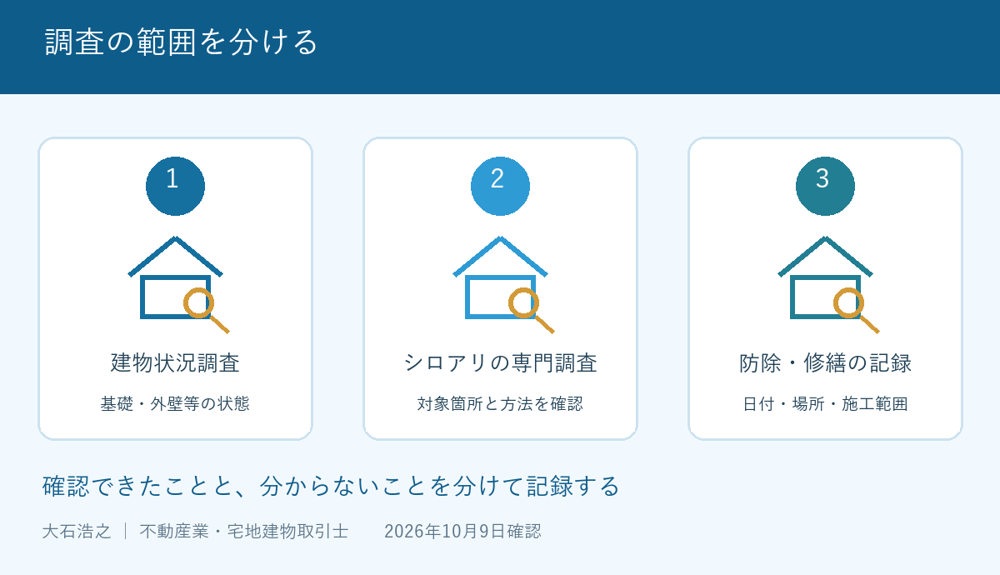

施設に入った親の家を売りたい。でも、床下を最後に見たのがいつなのか分からない。そんなとき、「建物は調査済みです」という一言で話を終わらせるのは早計です。何を調べ、どこを見られなかったかで、次の段取りが変わります。
大石浩之（磐田市／不動産業）です。宅地建物取引士として、私は調査の名前より報告書の中身を先に見たいと考えます。この記事は2026年10月9日に確認した国土交通省の資料を基に、シロアリの確認と売出し資料の準備に絞って説明します。
建物状況調査だけでシロアリまで分かる？
国土交通省の「安心Ｒ住宅」の質問６では、インスペクションを、目視や計測などによって住宅の基礎や外壁等の劣化・不具合を調べるものと説明しています。日本語で建物状況調査等と呼ぶ、建物の状態を把握するための調査です。
同じページの質問２は、シロアリについて専門の調査会社等への相談を案内しています。「安心」という表示や調査済みの説明があっても、シロアリ被害の不存在まで一括で保証する仕組みではありません。ここは、意外に感じる方もいると思います。
私は、調査結果を共通の資料として売主と買主が見られる点を評価します。口頭の「大丈夫だったはず」を減らし、建物を残して使うか考える材料になります。調査そのものを頼む時期は、売主が建物状況調査を先に頼む条件で整理しました。
その上で注文したいのは、不動産会社の説明の具体性です。「調査済み」で止めず、シロアリに関する確認が依頼内容に含まれたかまで伝えるべきです。私は、未確認を「異常なし」に置き換えて売り出すことには反対です。
売出し前に揃える３種類の記録
シロアリの売却準備では、現在の調査報告、過去の防除記録、傷んだ部分の修繕記録を分けて集めるのが私の提案です。三つは同じ書類ではありません。駆除したことと、傷んだ木部を修理したことを一緒に扱わないためです。
| 集める資料 | 見る欄 | 空欄なら聞くこと |
|---|---|---|
| 調査報告書・床下写真 | 調査日、調べた場所、未確認の場所 | 入れなかった場所はどこか |
| 防除の施工書・保証書 | 実施日、対象範囲、保証条件 | 期限と売却時の扱い |
| 修繕の見積書・工事記録 | 修理した部材、位置、完了日 | 防除と修理のどちらを行ったか |
保証書が見つかったら、表紙の期限だけで判断せず、条件のページも残します。名義変更時の扱いや対象範囲は、発行した会社へ確認する項目です。私は書類を渡す際、都合のよい一枚だけを抜き出さない形を勧めます。
「５年ほど前にやった気がする」という記憶も、問い合わせの手掛かりにはなります。ただし、正確な施工日として資料に記入するのは避けます。年月が分からなければ「時期不明・家族の記憶」として、請求書や施工会社の記録と照合します。
写真は、撮影日と家の中の位置が分かるようにまとめます。写真だけで被害の有無を自己判断する目的ではありません。専門業者に同じ場所を見てもらい、説明の食い違いを減らすためです。安全を確かめず床下へ入って撮影する必要はありません。

報告書の作成日と現地を調べた日は、分けて読みます。受け取ったばかりの書類でも、現地確認から時間が経っている場合は、その間の空き家管理の状況を業者へ伝えてください。
専門調査は範囲と報告の形を先に聞く
シロアリの専門調査を頼む前には、料金に含まれる範囲と、終了後に受け取れる報告書を確認します。私なら「床下を見る」という説明に、見られない場所の記録、写真、追加費用の条件を添えてもらいます。
例えば、点検口から見える範囲の確認と、床下へ進入しての確認では、依頼内容の読み方が変わります。どちらが実施できるかは建物と現場条件によります。「全部見てもらえるはず」と決めず、実施方法を業者の言葉で書いてもらってください。
調査の見積りと、見つかった場合の防除・修繕の見積りも別にします。先に工事を決めるのではなく、何が分かったら次を頼むかを区切るためです。本記事では、磐田市の一律の駆除料金や、査定から差し引く金額は提示しません。根拠を確認できていないからです。
建物を残して売る方向か、買主の利用方法も含めて検討する段階かで、資料を揃える順番には迷いが残ります。私は、どの家にも同じ検査を一式で勧めればよいとは考えません。まず既存資料を読み、売り方と調査の目的を合わせて判断したいと思います。
保険の説明も調査とは分けてください。空き家売却の瑕疵保険で確認する項目では、対象部位と条件を扱っています。専門調査をしたこと、保険に加入できること、特定の損害が補償されることは、それぞれ確認する内容が違います。
磐田・袋井の空き家は鍵と立会いを整理
磐田市・袋井市の実家を離れて管理するご家族には、調査の予約前に鍵と立会いの担当を整理するよう、私は提案します。地域名だけで被害の程度は判断できません。実際の建物を確認できる段取りを作る方が先です。
家族の連絡表には、鍵を持つ人、当日連絡がつく人、点検口の場所を知る人を書きます。施設入居した親御さんへ何度も書類探しを頼む前に、保管場所を一度だけ確認する方法もあります。入居の事情と現地の作業を、一つの予定表で見渡せる形がよいと思います。
私はこう考えます。家族との打合せに持ち込むなら、机に置くのは「工事をするか」の二択ではなく、確認できた場所と分からない場所の一覧です。親御さんが覚えている防除の話も、業者へ聞く項目として残す。売ると決める前でも、この一枚は作れます。これは特定の相談実話ではなく、私が勧める準備の順序です。
国土交通省は2026年９月４日、同年10月１日から31日までを住生活月間として案内しました。この記事では家の資料を見直すきっかけにしています。10月をシロアリの発生ピークとする意味ではありません。
売却の結論より、未確認の場所を残す
空き家のシロアリ確認で今日できることは、防除や点検の書類を一つ探し、日付と対象範囲を確かめることです。資料がなければ「なし」と記録します。売却を決断する日と、調査の入口を作る日は同じでなくて構いません。
安心Ｒ住宅の表示条件を読む場合も、名称だけでなく添付資料まで見てください。買主に説明する際には、分かっている被害や過去の対応を仲介業者へ伝え、告知内容と契約上の扱いを具体的に確認します。
- 防除・調査・修繕の資料を分けて保存する。
- 未確認の場所と、追加調査の担当を記録する。
- 工事の承諾前に、調査と修繕の見積りを分ける。
富士ヶ丘サービスは磐田・袋井に特化し、介護と不動産を一体で相談できる窓口です。家族が困らない売却のため、私は「分からない」を消さず、次に誰へ確かめるかまで案内します。契約上の責任や告知の個別判断は、宅地建物取引士や弁護士などの専門家に確認してください。